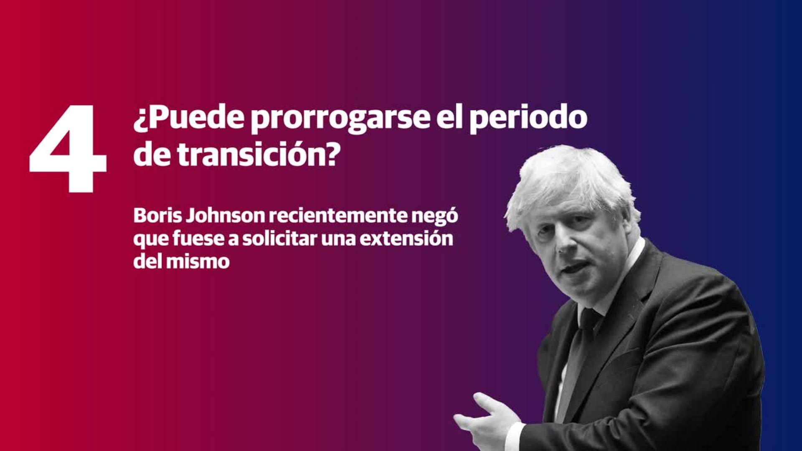

Gibraltar se quita desde hoy la mascarilla
El territorio británico de Gibraltar revocó este jueves el toque de queda y desde este domingo 28 de marzo de 2021 ha eliminado la obligatoriedad de usar mascarilla en espacios abiertos, al haber vacunado al 70% de su población, anunciaron las autoridades.
A partir de este domingo no será obligatorio usar mascarillas en espacios abiertos, aunque seguirá siendo un requisito en espacios públicos cerrados, comercios y el transporte público.«Finalmente, estamos dejando atrás nuestro invierno más mortal y dando la bienvenida a la primavera de la esperanza», se congratuló Fabian Picardo, el ministro principal del territorio.
La relajación de las restricciones es posible «en vista de las bajas tasas de casos activos de covid-19», gracias al «éxito del programa de vacunación», indicó un comunicado del gobierno del pequeño territorio en el extremo sur de la península ibérica.
El toque de queda que el territorio impuso a finales de diciembre entre las 10pm y las 6am, y que luego relajó en marzo, de la medianoche a las 5am, quedará sin efecto desde el pasado jueves.
La pandemia dejó 94 fallecidos en Gibraltar, principalmente entre enero y febrero de este año, y 4.200 contagios en este enclave de 34.000 habitantes.Pero su hospital no tiene ningún paciente con coronavirus y la última infección se notificó la semana pasada.
Más de 24.000 personas, o 70% de la población, ya han sido vacunadas con la pauta completa, y el gobierno espera tener a todas inmunizadas para mediados de abril.
Posted On: 2021-03-28T10:19:00

Content Date: 2021-03-28
Download Date: 2021-04-21
Document ID: L0C04AIHI